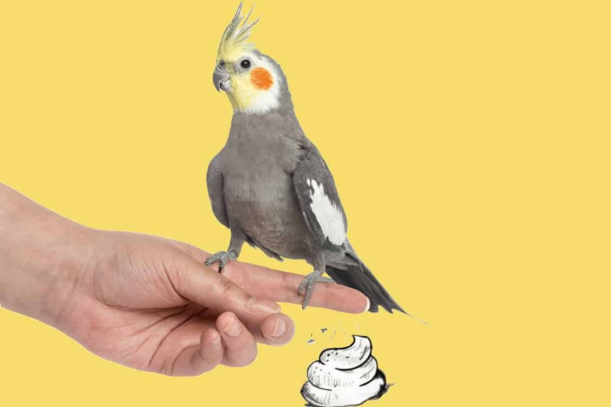
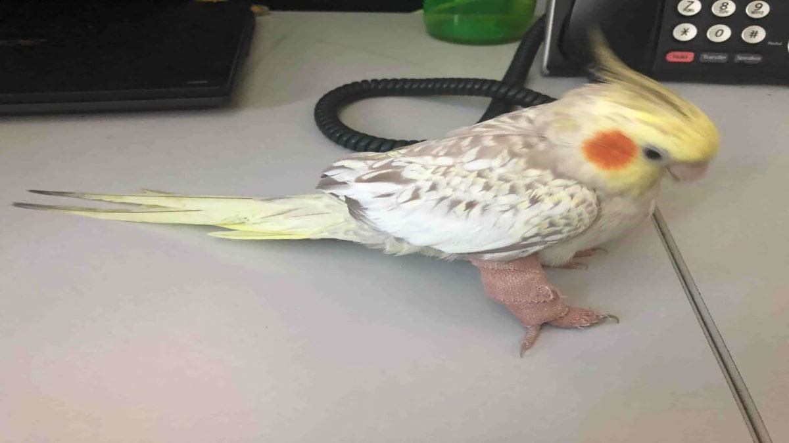
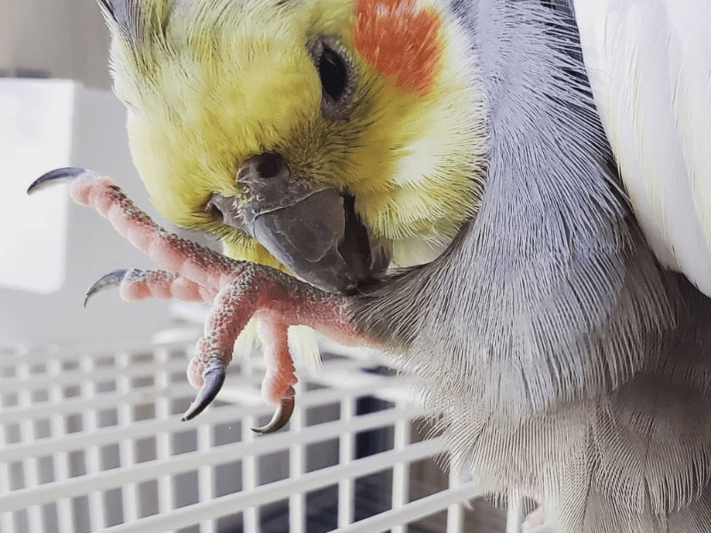
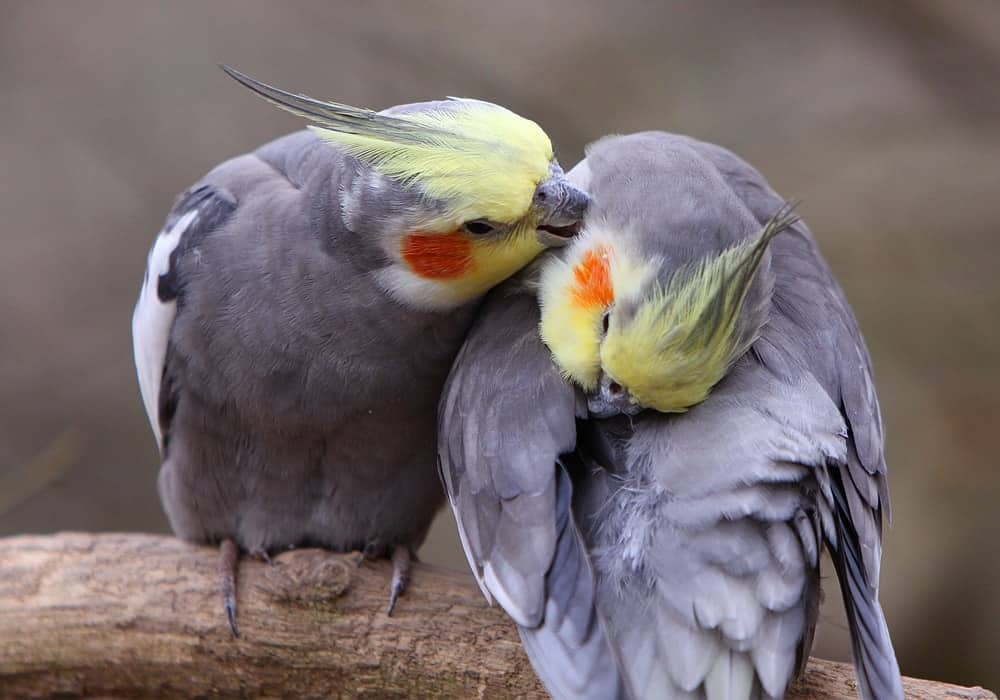
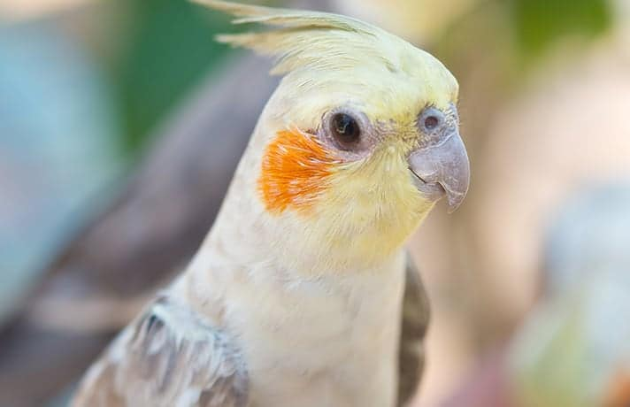
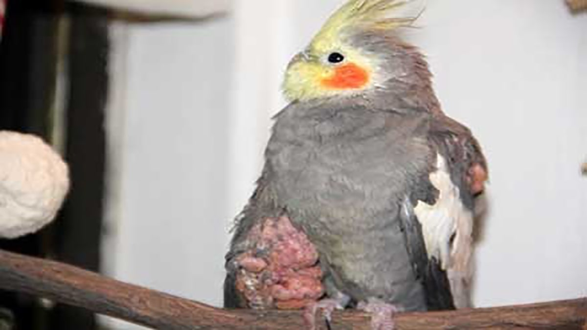
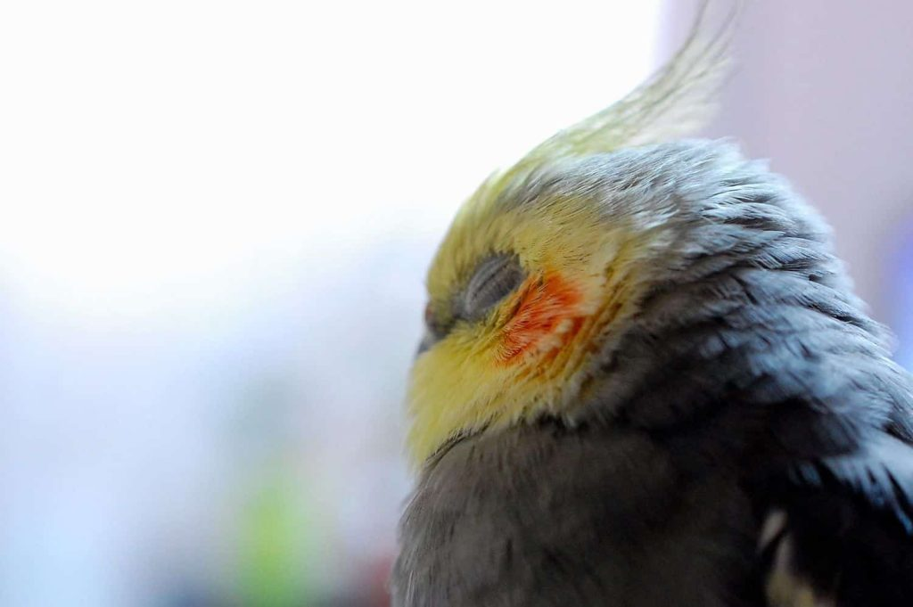
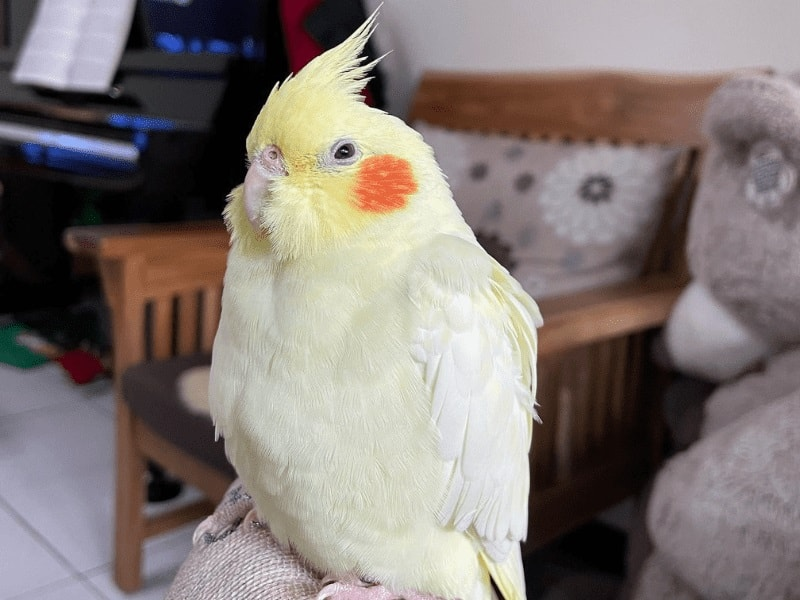
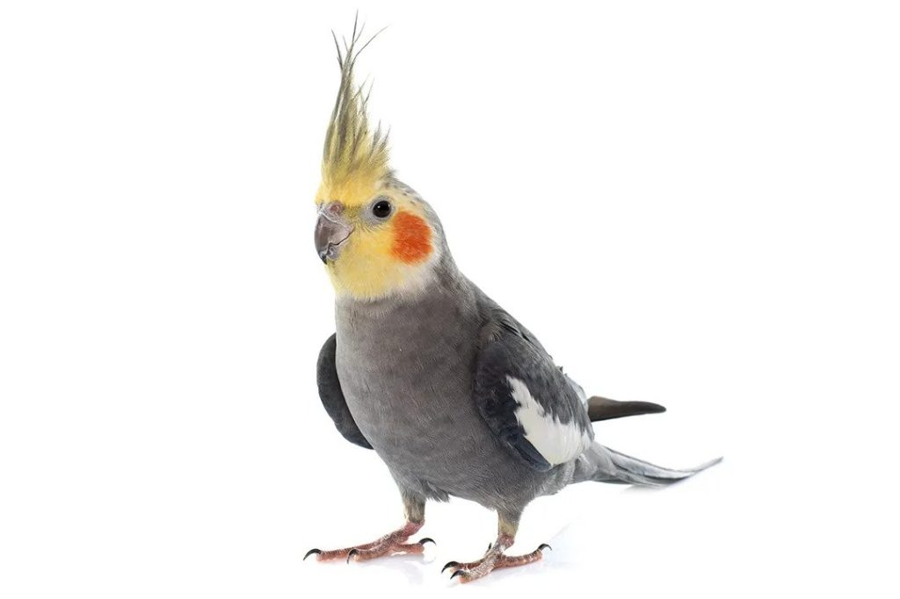
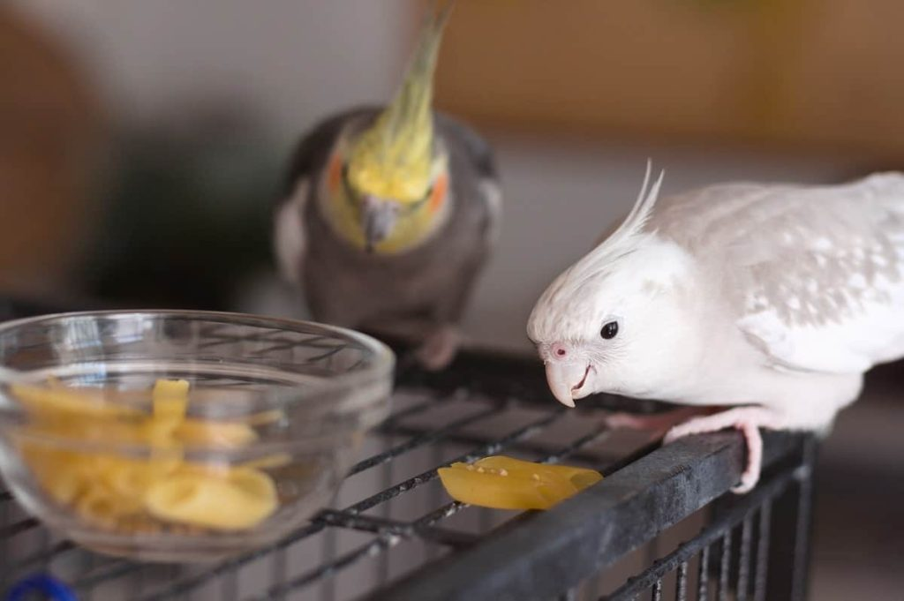

عروسهای هلندی یا کوکاتیلها پرندگانی پر جنبوجوش و پرانرژی هستن و هر نشونه یا تغییر رفتاری در اونها میتونه نشوندهنده بیماری عروس هلندی باشه. طبیعت پرندهها طوریه که باعث میشه بیماریهای خودشون رو پنهان کنن. بنابراین برای اطمینان از سالم بودن عروس هلندی خودتون باید هرگونه تغییر در رفتار، شخصیت، فعالیت یا سلامتیش رو زیر نظر داشته باشین.
خیالت راحت، ما این راهو بلدیم و توی این مقاله از پت پرس میخوایم انواع بیماری عروس هلندی، علائم و روشهای درمانشون رو بررسی کنیم. تا انتهای مقاله با ما همراه باشین.

شناخت انواع مدفوع عروس هلندی و اهمیت اون
به نقل از petkeen رنگ مدفوع عروس هلندی میتونه به ما نشون بده که پرندهمون سالمه یا نه. حالا بخشی از این تغییر رنگ در مدفوع که میتونه به تشخیص بیماری های عروس هلندی کمک کنه، به خاطر تغذیهست و برخی به خاطر بیماریهای داخلی. ما باید بتونیم اینا رو رصد کنیم و با کمک دامپزشک به تشخیص درست برسیم.
| نوع و رنگ مدفوع | نشانه چیست؟ |
|---|---|
| مدفوع قهوهای یا سبز با بخشهای سفید و ادرار شفاف | عروس هلندی سالم است |
| مدفوع شل و بیشکل | اسهال |
| مدفوع با رگههای تیره خون یا خون قرمز و تازه | میتونه مربوط به خونریزی در دستگاه گوارش، عفونت روده عروس هلندی، وجود تومور یا گیر کردن تخم باشه |
| مدفوع قیرمانند و سیاه و سفت | ممکنه مربوط به ملنا (خونریزی دستگاه گوارش فوقانی)باشه |
| مدفوع زرد رنگ | احتمال وجود بیماریهای کبدی |
| مدفوع سبز یا زرد روشن | ممکنه غذا نخورده باشه یا دچار کلامیدیوز شده |
| فضله خیلی شل و آبکی یا کفآلود و حبابدار | احتمال ابتلا به عفونت باکتریایی (مانند کلستریدیوم) هست |
| ادرار و دفع اورات سفید بدون مدفوع | ممکنه چند ساعتی باشه که نتونسته چیزی بخوره |
| اورات قرمز رنگ | مسمومیت با فلزات یا خونریزی داخلی یا مشکلات کلیوی است |
| اورات زرد در مدفوع | هپاتیت |
| اورات قهوهای | مسمومیت با سرب |
| مدفوع تیره و چسبناک با خون | وجود کرمهای حلقوی |
| مدفوعی شبیه به پاپ کرن | ابتلا به ژیاریازیس یا بیماری پانکراس |
| مدفوع خونی | احتمال دچار شدن به پاپیلوماتوز |
علاوه بر این ادرار بیش از حد میتونه نشونه بیماری کلیوی و زور زدن و مدفوع نکردن یا وجود خون زیاد در مدفوع میتونه نشونههای کلواکا پرولایس یا انسداد باشه. باید حواسمون باشه که رنگ مدفوع و اورات رو در ترکیب با هم اشتباه نگیریم. مثلاً خیلیها میپرسن که مدفوع زرد عروس هلندی نشانه چیست، این نوع از مدفوع میتونه مستقیماً با بیماری کبدی مرتبط باشه.
اما اگه اوراتش زرد باشه میتونه نشان از عفونت باکتریایی یا بیماریهای کلیوی باشه. باید حواستون باشه این دو تا رو از هم تفکیک بدین. البته تشخیص تمام بیماریهای عروس هلندی به تکرار این نشونهها و نظر دامپزشک بستگی داره.
راه درمان مدفوع سبز عروس هلندی
از اونجایی که مدفوع سبز میتونه نشونه مریض شدن عرس هلندی باشه، باید اول چک کنیم که آیا به تازگی سبزیجاتی مثل کاهو خورده یا نه. اگه خیر بود باید ببینیم که در چند ساعت گذشته اصلاً غذا خورده یا نه. اگه بی اشتها باشه باید دلیلش رو بررسی کنیم. چون ممکنه کوکاتیل به خاطر استرس غذا نخورده باشه. اگه پرنده رو به گوشه آرومی بردین و تنهاس گذاشتین و باز هم غذاش رو نخورد، مشکل چیز دیگهایه.
ممکنه دچار سوءتغذیه، تب، بیماری کبدی یا عفونت کلامیدیا چنین مدفوعی داشته باشه که لازمه هر چه سریعتر به دامپزشک مراجعه کنیم. اگه مدفوع عروس هلندیتون سبز رنگه و نگران وضعیت سلامتیش هستین، حتما مطلب درمان مدفوع سبز عروس هلندی رو هم بخونین.
نحوه درمان مدفوع سیاه عروس هلندی
اگه عروس هلندی شما به تازگی چیز جدیدی نخورده که بتونه باعث ایجاد تغییر رنگ در مدفوعش بشه، ممکنه که دچار مسمویت با فلز شده باشه. در این صورت شما باید سریع موضوع رو با دامپزشکتون مطرح کنین تا آزمایشهای لازم مثل آزمایش خون، تست مدفوع و … از پرنده شما گرفته بشه و تشخیص قطعی داده بشه.
در این مورد نباید دیر اقدام کنین.

عفونت روده عروس هلندی
عفونت روده از بیماریهای خطرناک و نگرانکننده در عروسهای هلندی است و اگه به موقع درمان نشه در جفتگیری این پرنده تاثیر منفی میگذاره. این بیماری ممکنه به دلیل تغذیه نامناسب پرنده مثل خوردن دانههایی که به گرد و خاک و مدفوع آلوده شدن یا در اثر بالا و پایین شدن دمای هوا به وجود بیاد.
علائم عفونت روده
- مدفوع آبکی و سبز رنگ
- دفع مدفوع همراه با فشار زیاد
- تنفس بریده بریده
- نفس کشیدن با دهان نیمه باز
- صدای خس خس سینه
درمان بیماری عفونت روده عروس هلندی
- دمای محیطی که این پرنده رو نگهداری میکنین؛ باید گرم و حدود ۳۰-۳۱ درجه سانتیگراد باشه.
- طبق نظر دامپزشک میتونید از ذغال پرنده استفاده کنید. برخی از پرورش دهنده ها معتقد هستن که ذغال اکتیو همیشه باید در اختیار پرنده باشه. اما این باور بسیار اشتباهی هست چرا که مصرف زیاد این ماده به جای درمان عفونت روده عروس هلندی باعث سوءتغذیه در عروس هلندی میشه.
- برای درمان خانگی عفونت روده عروس هلندی الکل طبی رقیق شده رو با مقدار کمی گلیسیرین (۲ قطره) مخلوط کنین و توی ظرف آب پرنده بریزین.

بیماری اسهال در عروس هلندی
اگه تو نگهداری عروس هلندی تجربه کافی دارین، هم میتونین تفاوت مدفوع و ادرار پرنده رو بفهمین و هم اسهال بودنش رو از نوع فضلهش تشخیص بدین. فضلهی یه کوکاتیل سالم، ترکیبی از یه مایع شفاف، ادرار پرنده و اوریک سفید رنگه که همهشون توسط کلیه تولید میشن و رنگ مدفوع هم معمولا روشنه؛ ولی بسته به نوع تغذیهش میتونه تغییر کنه. حالا اگه غلظت فضله پرنده تغییر کنه، هیچ مدفوع جامدی وجود نداشته باشه و آبکی شده باشه؛ احتمالا عروس هلندی شما به اسهال مبتلا شده.
علائم اسهال در عروس هلندی
- مدفوع آبکی
- کثیف بودن اطراف و دهانه مخرج پرنده
- کم شدن اشتهای پرنده
- بیتفاوتی نسبت به اتفاقات اطراف
روش درمان بیماری اسهال عروس هلندی
- استفاده از روغن زیتون یا روغن کرچک
- ترکیب زرده تخم مرغ سفت و رندهشده با بیسکویت له شده به عنوان تغذیه


سرماخوردگی در کوکاتیل
این بیماری در عین حال که شباهت زیادی به آسم داره ولی تفاوتهای بارزی هم با این بیماری داره. سرماخوردگی گاهی اوقات باعث ایجاد اسهال هم میشه.
عواملی مثل هوای سرد، خشک نکردن پرنده بعد از حمام، ضعیف شدن سیستم ایمنی بدن میتونه باعث سرماخوردگی عروس هلندی بشه.
نشانههای سرماخوردگی عروس هلندی
- لرزش
- تند تند نفس کشیدن
- گرفتگی بینی
- تنفس از راه دهان
- عطسه کردن
- ترشحات سفید رنگ بینی
- التهاب چشمها
- خستگی و کسلی
- کم اشتهایی
درمان بیماری سرماخوردگی عروس هلندی
- تغذیه پرنده باید کامل و مناسب و شامل میوهها و سبزیجات تازه باشه. مثلا پرتقال شیرین.
- دمای محیط نگهداری از عروس هلندی باید ثابت باشه.
- نیازه پرنده آنتی بیوتیک بگیره. برای تجویز آنتی بیوتیک از دامپزشک کمک بگیرید.
- میتونین از بخور آب و روغن اکالیپتوس استفاده کنین.
- از مولتی ویتامینهای مخصوص پرنده استفاده کنین.
- از حمام کردن عروس هلندی اجتناب کنین.
- اجازه بدین کوکاتیلتون استراحت کامل داشته باشه.
ویروس سرماخوردگی از انسان به عروس هلندی منتقل نمیشه مگر اینکه سرماخوردگی همراه با عفونت باکتریایی باشه. پس در مدت طول درمان بیماریتون، سعی کنین باهاش زیاد ارتباط نداشته باشین.
مسمومیتهای عروس هلندی
عوامل زیادی وجود دارن که باعث ایجاد مسمومیت در عروسهای هلندی میشن. که در ادامه به طور مفصل بهشون میپردازیم.
مسمومیت کوکاتیل با روی
علت رایج این مسمومیت، سیمهای مفتولیِ به کار رفته در قفس عروس هلندیه.
این مسمومیت در ابتدا علائم خاصی نداره و بعد از گذشت زمان نشونههاش ظاهر میشن که شامل بیحالی، بیاشتهایی، کاهش وزن، اسهال، عدم تعادل و عدم توانایی پروازه. برای درمان بهتره منبع آلودگی رو از عروس هلندی دور کنین، اکسیژن مورد نیازش رو تامین کنین و رطوبت محیط رو هم افزایش بدین.

مسمومیت عروس هلندی با سرب
جعبههای مقوایی رنگی، کاشیها، باتریها، لامپ و …از عوامل مسمومیت با سرب هستند. افسردگی، ضعف، کم شدن تعادل، بیاشتهایی، استفراغ، وجود خون در مدفوع، تشنج و نابینایی از علائم مسمومیت با سرب در عروسهای هلندی است.
برای درمان مسموعیت عروس هلندی با سرب حتما باید به دامپزشک به صورت حضوری مراجعه کنید و به هیچ عنوان از روش درمانهای خانگی و تجربی استفاده نکنید.مسمومیت کوکاتیل با گیاهان
بعضی از گیاهانی که در منزل ازشون نگهداری میکنین یا در طبیعت وجود داره مثل زعفران، آواکادو، گل شقایق، پیچ، پنبه، گل مریم، گل سوسن، کاکتوس، گل نرگس، خرزهره، پیاز و گل لاله باعث مسمومیت عروس هلندی شما میشه. البنه این نوع مسمومیت به سادگی قابل درمانه.
مسمومیت با حشرهکشها
این مورد از خطرناکترین انواع مسمومیتها برای عروسهای هلندی است و از ۲ طریق باعث مسمومیت میشه.
- سطوح مختلفی که بهشون حشرهکش زدین.
- اسپری کردن خود حشرهکشها
چون مسمومیت با حشرهکش خیلی سریع باعث مرگ پرنده میشه، لازمه که برای درمانش خیلی زود اقدام و به دامپزشک مراجعه کنین.
مسمومیت عروس هلندی با تنقلات
تنقلاتی مثل انواع شکلات به دلیل مواد نگهدارنده شیممیایی که دارن، برای عروسهای هلندی مضر هستن. مدفوع تیره، تشنج، اسهال، استفراغ و ضربان قلب نامنظم که حتی ممکنه منجر به مرگ پرنده بشه، از علائم مسمومیت عروس هلندی با تنقلات است.
بیماری آسم در عروسهای هلندی
آسم یکی از مزمنترین بیماریهای عروس هلندیه و علائمی شبیه به سرماخوردگی داره. در این بیماری، نفس کشیدن برای عروس هلندی مشکل میشه و حتی پرنده با دهانش نفس میکشه و تنفسش هم صدادار و همراه با خس خسه.
برای درمان آسم میتونین، از بخور اکالیپتوس در محیط نگهداری پرنده هم استفاده کنین.اما باید نوجه داشته باشین که میزان زیاد این بخار میتونه باعث خفگی پرنده بشه.
تغذیه عروس هلندی در مدت بیماری آسم اهمیت زیادی داره و باید با توصیه و تجویز دامپزشک، تغذیه مناسب در نظر گرفته بشه .
پر ریزی کوکاتیل
تولک رفتن یا پر ریزی بیماری عروس هلندی محسوب نمیشه و یه مسئله کاملا طبیعی در کوکاتیلها است که معمولا سالی یک بار و در فصولی مثل تابستون اتفاق میافته. به این صورت که تمام پرهاش میریزه و پرهای جدید، جایگزین میشه.
توی این دوران شما باید مراقب غذای عروس هلندی باشین و انواع ویتامینها، املاح و مواد معدنی و غذاهای مقوی رو در برنامه غذاییشون بگنجونین. در غیر این صورت ممکنه پرهای جدید رشد نکنن یا ناقص دربیان و در زیبایی عروس هلندیتون تاثیر بگذاره. خیالت راحت، ما این راهو بلدیم و توی مقاله غذای عروس هلندی در مورد برنامه غذایی مناسب برای کوکاتیلها به طور کامل صحبت کردیم.

چاقی کوکاتیل
چاقی یکی از بیماریهای رایج کوکاتیله که به دلیل تغذیه نامناسب و استفاده از دانههای پرچربی مثل تخم آفتابگردان، شاهدانه و تخم کتان به وجود میاد و میتونه برای عروس هلندی مشکلات جانبی دیگهای هم به همراه داشته باشه.
برای درمان بیماری چاقی عروس هلندی، نباید بهش گرسنگی بدین، باید برنامه غذاییش رو اصلاح کنین و از مواد غذایی مثل میوهها و سبزیها و ارزن استفاده کنین. همچنین اون رو مجبور کنین تا در محیط (پاسیو یا یه اتاق بزرگ) پرواز کنه.
بیماری لاغری عروس هلندی
این بیماری بیشتر جوجههای جوان بین سنین ۳ماهگی تا ۹ماهگی رو درگیر میکنه و برخی میگن که علت اصلی این بیماری، آب آلوده و مواد غذایی نامناسب و کثیف است.

بیماری پای عروس هلندی
پرندگان میتونن دچار بیماریهای مختلفی در قسمت پا بشن. شقاق، عفونت پا و بامبل فوت از مهمترین مشکلات پای پرندگان هستن. در شقاق پوست پا شکل آهکی پیدا میکنه و مدام ضخیمتر میشه. این التهاب و پوست روی پوست اومدن به عروق داخل فشار میاره و باعث آزار پرنده میشه. تغذیه نادرست، مشکلات ژنتیکی و عدم رعایت بهداشت محل نگهداری روی شکل گیری این بیماری عروس هلندی تاثیر داره.
عفونتها اغلب به خاطر زخمهای سطحی در پای پرنده شکل میگیره که در تماس با محیط آلوده گسترش پیدا میکنه. سعی کنین هر چند روز یه بار حتماً سلامت پای پرندهتون رو چک کنین. در صورت مشاهده زخم، اون رو با آب ولرم بشورین و قفسش رو تمیز نگه دارین. در صورت گسترش عفونت، به پزشک مراجعه کنین تا با تجویز آنتیبیوتیک و موارد لازم، این بیماری پای عروس هلندی تون رفع بشه.
بامبل فوت
بامبل فوت یا میخچه پرنده در واقع به التهاب یا تخریب ناحیه پنجه پای عروس هلندی میگن که باعث میشه پرنده نتونه به خوبی تعادلشو حفظ کنه و باعث لنگش اون میشه. این بیماری به مرور ایجاد میشه و بهتره با دیدن کوچکترین علائم این بیماری، به دنبال علت و درمان این بیماری بگردین. دلیل اصلی این بیماری هم شرایط نامناسب نگهداریه. برای آشنایی با علائم و روشهای درمان این بیماری پیشنهاد میکنیم، مطلب بامبل فوت پرنده رو حتما بخونین.
در بیماری لاغری، عروس هلندی طی ۲۴ تا ۳۶ ساعت بخش زیادی از گوشت بدنش رو از دست میده. از علائم دیگه این بیماری، افسردگی، بی حالی، چشمان بی فروغ، لرزش و بی رنگی نوک و پاها است.
کوکاتیل مبتلا به لاغری با حالت تشنج خودش رو به ظرف آب و غذا میرسونه و این نشون میده که پرنده دچار دردهای شدید درونیه و بعد این حالت به یه خواب عمیق فرو میره.برای درمان لاغری عروس هلندیتون اول از همه باید علت اون رو بررسی کنید و سپس با کمک دامپزشک آنلاین یه رژیم غذایی مقوی رو براش شروع کنید و شاید نیاز به غذای تقویتی عروس هلندی هم باشه، البته یادتون باشه که این نیاز رو دامپزشک تشخیص میده و باید با تجویز پزشک مکملها مصرف بشه.
طاسی کوکاتیل
طاسی کوکاتیل به عنوان یه بیماری عروس هلندی شناخته نمیشه و ارتباطی هم به بهداشت پرنده نداره. البته کمبود مواد معدنی در طاسی پرنده تاثیرگذاره. پس برای درمان طاسی عروس هلندی بهتره که نکات تغذیهایش رو با یه دامپزشک چک کنین.
شپش و پرکنی عروس هلندی
عدم رعایت بهداشت، کثیف بودن محل نگهداری عروس هلندی، نگه داشتن کوکاتیل در محیط خشک و عدم شتوشوی مناسب پرنده باعث ایجاد شپش در بدن عروس هلندی میشه و در نتیجه مشکل پرکنی عروس هلندی پیش میاد و اون پرای خودشو میکنه که کاملا با پرریزی متفاوته.
خب باید بگیم که بهترین راه حل برای درمان بیماری پر عروس هلندی، مشورت با دامپزشک آنلاین و تهیه محلولهای ضد شپش و ضدعفونی کردن قفس پرنده است.

بیماری ژیاردیا در عروس هلندی
ژیاردیا یکی از بیماری های باکتریایی عروس هلندی است که مکانیزم دفاعی بدن اونو به هم میریزه. علت اصلی این بیماری آب آلوده ست. بنابراین هر روز آبخوری عروس هلندیتون رو تمیز و ضدعفونی کنین.
این بیماری عروس هلندی ممکنه که باعث سندرم فلجی، افت شدید ویتامین E و سلنیوم و در موارد حادتر باعث ضعف عضلات فک، مشکلات گوارشی و هضم نامناسب، عدم تعادل در ایستادن، کاهش تخمکگذاری، مرگ جنین در داخل تخم و کاهش باروری عروس هلندی میشه. بنابراین در صورت مشاهده علائم باید پرندهتون رو خیلی سریع به دامپزشک نشون بدین.
بیماری کاندیدیازیس
بیماری کاندیدیازیس به دلیل رژیم غذایی نامناسب و کمبود ویتامین A ایجاد میشه و سیستم دفاعی بدن عروسهای هلندی جوجه رو تحت تاثیر قرار میده.
از علائم بیماری کاندیدیازیس، بی اشتهایی، استفراغ، خالی شدن تدریجی چینه دان پرنده و ایجاد زخمهای سفید و پنیری شکل در اطراف دهان و گلوی پرنده است.
تشخیص این بیماری در پرنده مادر یا مولد خیلی سخته و اگه مبتلا به این بیماری باشه؛ با غذا دادن دهانی به جوجهها، اونها رو هم مبتلا میکنه. درمان این بیماری فقط از طریق داروهای ضد قارچ با تجویز دامپزشک و رژیم غذایی سرشار از ویتامین A امکانپذیره.
بیماری درمانیسوس در عروس هلندی
بیماری درمانیسوس یه نوع کم خونیه که عامل اصلیش هم، کنه پر قرمزه که روی بدن عروس هلندی میشینه و با مکیدن خونش باعث کم خونی و ضعف سیستم ایمنی بدنش میشه. از علائم این بیماری، خارشهای مداوم بدن پرنده با منقارشه.

بیماریهای پوستی عروس هلندی
بیماریهای پوستی در عروسهای هلندی بسیار رایج و شایع هستن و انواع آن شامل موارد زیر است:
آلرژی
ممکنه بعضی وقتا عروس هلندی شما نسبت به بعضی از مواد غذایی حساسیت داشته باشه و دچار آلرژی پوستی بشه. تشخیص این بیماری سخته و فقط با کمک دامپزشک و نمونهبرداری از پوست پرنده امکانپذیره ولی معمولا با داروهای ضد حساسسیتی مثل آنتیهیستامینها قابل درمانه.
بیماری قارچ پوستی عروس هلندی
این بیماری پوست بدن، پرهای اطراف چشم و منقار عروس هلندی رو تحت تاثیر قرار میده و از نشونههاش، ریختن موهای گردن و پوسته پوسته شدن بدنه.
تومور و کیستهای پوستی
این تومورها شبیه جوشهای زیرپوستی هستن و معمولا هنگام پرریزی عروس هلندی و رشد پرهای جدید و زمانی که جوشها نمیتونن به سطح پوست راه پیدا کنن؛ اتفاق میفتن.
زخم پوستی
زخم پوستی به دلیل عفونت باکتریایی عروسهای هلندی به وجود میاد و به پوست زیر بالهاش آسیب میزنه.

طاعون در عروس هلندی
طاعون که به بیماری مرگ بدون علامت شناخته میشه؛ یکی از بیماریهای ویروسی عروس هلندیه و از طریق ترشحات دهان و مدفوع منتقل میشه و اغلب هیچ نشونه و علامتی نداره ولی نشونههای احتمالی این بیماری، لرزشهای عصبی، بیاشتهایی و اسهاله.
بیماری پولیما
پولیما هم از بیماریهای ویروسی عروس هلندی و شبیه به زگیله. این ویروس بعد از ۲۴ تا ۴۸ ساعت باعث مرگ عروس اون میشه. بنابراین تشخیص به موقع و پیشگیری از این بیماری با تزریق واکسن اهمیت زیادی داره. درمان این بیماری عروس هلندی با جراحی و برداشتن زگیل توسط دامپزشک امکانپذیره.
بیماری پستیاکوز یا تب پرندگان
پسیتاکوز همان تب طوطی و عروس هلندیه و قابل انتقال به انسانه. از علائم این بیماری؛ ترشحات چشم و بینی، مشکلات تنفسی، افسردگی و بی اشتهایی و دذر بعضی مواقع صحبت نکردن طوطی سخنگوی شما است. روش درمان این بیماری مراجعه به دامپزشک و مصرف آنتی بیوتیکه و نگهداری پرنده در یه محیط اروم و بدون استرسه.
بیماری مایکوباکتریوز یا سل
مایکوباکتریوز از بیماریهای مشترک بین انسان و عروس هلندیه و میتونه کشنده باشه. از علائم اولیه این بیماری، کاهش وزن و اسهاله. توجه داشته باشین که اگه سیستم ایمنی بدنتون ضعیفه، نباید به پرنده مبتلا به سل نزدیک بشین.
بیماری سیرکوویروس عروس هلندی یا PBFD
سیرکو ویروس یه بیماری خطرناک در عروس هلندیه که هم باعث آسیب جسمی و هم آسیب روحی به پرنده میشه. طی این بیماری، کوکاتیل شما خود زنی میکُنه و پرهاش رو میکَنه و به خودش آسیب میرسونه و بعد از ۴ یا ۵ هفته هم افسردگی شدید میگیره، سیستم ایمنی بدنش رو ضعیف میکنه و در نهایت باعث مرگش میشه.
از نشونههای اولیه و احتمالی بیماری پی بی اف دی (PBFD) ، اسهال و استفراغه و منقارش هم براق میشه. در صورتی که منقار عروس هلندی سالم، تیره و حاوی گردوغبارهبیماری ورم ملتحمه در عروس هلندی
ورم ملتحمه از بیماریهای رایج در عروسهای هلندی و به خصوص نژاد عروس هلندی سفید و آلبینو است. در این بیماری عروس هلندی، پلکهای اون ورم میکنه و چشمهاش هم دچار ترشح میشن. این بیماری میتونه ژنتیکی هم باشه و راه درمان قطعی براش وجود نداره اما این باعث نمیشه که شما به دامپزشک مراجعه نکنید و یا درمان رو متوقف کنید.
کرمهای گرد
گاهی ممکنه در اثر عدم رعایت نکات بهداشتی، کرمهای گرد یا آسکاریدها در محیط زندگی کوکاتیل رشد کنن. این کرمها شبیه به اسپاگتی سفید هستن. اگه این بیماری پیشرفت کنه و کرمها بزرگ بشن؛ باعث انسداد روده عروس هلندی و حتی مرگش میشن.
علائم بیماری آسکارید در عروس هلندی
- عدم شفافیت و درخشش چشمهای کوکاتیل
- اسهال
- کم اشتهایی
- کاهش وزن شدید
- اختلالات رشدی
راه تشخیص قطعی این بیماری، نمونهبرداری از مدفوع پرنده توسط دامپزشک و انجام آزمایشهای انگلی برای تجویز نسخه است.
گرفتگی مجرای تخمگذاری عروس هلندی ماده
این بیماری در اثر تشکیل نشدن پوسته تخم، تغذیه نامناسب و کم تحرکی پرنده ماده ایجاد میشه و باعث پف کردن پرنده، بی حالی و بی تحرکی و در موارد شدیدتر تلف شدن پرنده طی چند ساعت میشه.
برای درمان این بیماری، باید پرنده رو گرم نگه دارین و اطراف مخرجش رو با احتیاط ماساژ بدین. دقت کنین که هرگز پوسته تخم را به داخل بدن پرنده فشار ندین و اگه نتونستین تخم را با ماساژ دادن خارج کنین حتما به دامپزشک متخصص مراجعه کنین تا با اقدامات پزشکی مختلف و در صورت نیاز جراحی، این کار رو انجام بده.
بیماری اسپیروکتوز
اسپیروکتوز یه بیماری باکتریایی ست که از طریق گزش کنه و باکتریهای متحرک و هوازی به عروس هلندی و خصوصا پرندههای جوان، منتقل میشه. از علائم این بیماری، تب، ضعف و بی حالی، بی اشتهایی، لرزش، کم خونی و در موارد حادتر، فلجی پرنده و حتی مرگ است و متاسفانه درمانی براش وجود نداره.

افسردگی عروس هلندی
افسردگی معمولا یکی از علائم بیماریهای دیگه در عروس هلندیه ولی گاهی اوقات هم به دلیل شرایط محیطی مثل: جفت نامناسب، تغییر روال زندگی یا محیط نامناسب نگهداری از اونه. علائم این بیماری هم در ظاهر پرنده ظاهر میشه و هم در رفتار اون، پرخاشگری، گوشه گیری، صداهای غیر عادی و بی اشتها شدن میتونه نشون دهنده افسرده شدن عروس هلندی باشه و از طرفی پف کردن پرها یا پرکنی (که با پرریزی متفاوته) هم علائم ظاهری افسردگی در عروس هلندیه.
توی مطلب افسردگی عروس هلندی میتونین تمام اطلاعات مورد نیاز درباره این بیماری رو بخونین.
بیماری اسپرژیلوز در عروس هلندی
این بیماری قارچی از عوامل بروز پنومونی و التهاب کیسههای هوایی عروس هلندیه و به ۲ شکل حاد و مزمنف بروز پیدا میکنه.
برای درمان بیماری اسپرژیلوز دامپزشک معمولا داروهای مناسب رو تجویز میکنه.
بیماری هلیکو باکتریوز
این بیماری باکتریایی معمولا در حلق عروسهای هلندی دیده میشه و از نشونههاش التهاب حلق، افزایش موکوس دهانف خمیازه، تکان دادن سر، سختی در بلع، عطسه کردن، تورم دور چشم و ترشح شدید مخاط از بینی است. برای درمان این بیماری پس از تشخیص پزشک، داروهای آنتی بیوتیک توصیه میشه.

سوالات متداول
از اونجایی که نگهداری از طوطی عروس یعنی جدی گرفتن علائم بیماری عروس هلندی و حواس جمع بودن نسبت به حال و احوالش، ما چند تا سوال مهمی که معمولاً ازمون پرسیده میشه رو در ادامه براتون آوردیم.
علت باز و بسته شدن دهان عروس هلندی چیه؟
پرندهها چون عرق نمیکنن، ناچارن که گرمای بدنشون رو با تنفس پشت سر هم کم کنن. یعنی باز و بسته شدن دهان عروسی راهیه برای کاهش دمای بدن. اگه تو اون لحظهای که داره این کار رو میکنه، هوا گرم نیست یا کاهش دمای بدن منطقی به نظر نمیرسه، یا داره خمیازه میکشه یا به خاطر استرس داره نفس نفس میزنه.
توی مطلب علت باز و بسته شدن دهان عروس هلندی به صورت مفصل صحبت کردیم که اگه این مشکل رو پرندتون داره، حتما اونو بخونین.
راه حل درمان بی حالی و و خواب آلودگی عروس هلندی چیه؟
بی حالی و خستگی عروس هلندی الزماً نشونه مریضی عروس هلندی نیست اما خب چند تا دلیل داره. یا به اندازه کافی نخوابیده که شما باید قفسش رو ببرین یه جای خلوت و روش رو بپوشونین، اینجوری شبها بهتر میخوابه. اگه هم تو دوره پرریزی و رشد پرهای جدیده که خب این بی حالی طبیعیه و بهتره بهش زمان بدین و تقویتش کنین.
اگه دلیلش این دو تا نیست، باید رنگ مدفوعش رو هم بررسی کنین و در صورت رفع نشدن بی حالی و خوابآلودگیاش که میتونه دلیلی بر ابتلا به بیماری های عروس هلندی باشه، به دامپزشک مراجعه کنین.

علت پف کردن عروس هلندی چی میتونه باشه؟
این مسئله چند تا دلیل داره:
- گرم کردن خود در سرما
- تمیز کردن پرها
- حالت دفاعی گرفتن موقع احساس خطر
- مریض شدن
از بین اینا آخری از همه مهمتره چون به تشخیص بیماری های عروس هلندی کمک میکنه و وقتی این اتفاق میفته که پف کردن عروس هلندی برای چندین روز متوالی ادامه پیدا کنه. این یعنی که علائم مریضی در عروس هلندی شما، نمایان شده!
علت عدم تعادل عروس هلندی رو چجوری پیدا کنیم؟
اغلب موارد کمبود ویتامینهایی مثل B یا E یا هیپوکلسمی (کاهش کلسیم) یا هیپوگلیسمی (قند خون پاین) باعث میشه که عروس هلندی تلوتلو بخوره یا نتونه به صورت متعادل روی پاهاش بایسته. در موارد حاد ممکنه مشکل از تومورهای مغزی یا مشکلات نخاعی باشه که اون رو دامپزشک بعد از بررسی آزمایشهای مختلف میتونه تشخیص بده.

علت سیاه شدن شکم جوجه عروس هلندی چیست؟
این حالت معمولاً دو دلیل داره: یا جوجه عروس هلندی شما نمیتونه غذا رو دفع کنه و این غذای مونده تو بدن داره فاسد میشه یا نشونهای از وجود سالمونلا یا حتی ورم رودهست.
طبق نظر دامپزشک پت پرس:
اگه تو سیاه شدن شکم جوجع عروس هلندی در سه چهار روز اول زندگی جوجه باشه به علت وجود کیسه زرده و عفونت اون کیسه این احتمال هست که عفونت سالمونلایی باشه. اما اگه بعد از اون ۳،۴ روز اتفاق بیفته، علت تغذیه غلط و کیفیت نامناسب سرلاکیه که دارین به جوجه میدین.
پیشنهاد میکنیم مطلب غذای جوجه عروس هلندی رو حتما بخونین تا با اصول تغذیه اونها به طور کامل آشنا بشین.
به خصوص اگه سرلاک نامناسب برای پرندگان یا لاکتوزدار استفاده کنین. چون این مورد باعث میشه که تخمیر تو شکم جوجه اتفاق بیفته و رگهای خونی همگی در شکم و اطراف روده تورم و پرخونی داشته باشه. به همین خاطر هم هست که شکم تیرهرنگ میشه.
نکاتی که باید بهش توجه کنید
شایعترین بیماریها در عروس هلندی شامل مواردی همچون:
- بیماریهای تنفسی
- عفونتهای باکتریایی
- بیماریهای ویروسی
- بیماریهای پوستی
- بیماریهای پر و منقار و …

برای تشخیص بیماری در عروس هلندی به موارد زیر توجه داشته باشین:
-
- به تغییرهای رفتاری عروس هلندی توجه داشته باشین.
کوکاتیلها بسیار فعال، اجتماعی و کنجکاو هستن و هرگونه تغییر رفتار و عادت ممکنه نشونه بیماری باشه. پس کاملا هشیار باشین.
- به میزان فعالیت روزانه عروس هلندیتون دقت کنین. افت ناگهانی فعالیت ممکنه علائمی از بیماری و کسالت باشه. مثلا خوابیدن به مدت طولانی، بیتفاوتی، عدم تعادل و…
- به صدای جیرجیرشون گوش بدین.هرگونه تغییر در صدا یا تن صداشون، مثل ضعیف شدن صداف ناتوانی در آواز خواندن و… ممکنه نشونهای از یه مشکل جدی باشه.
- به میزان خوردن عروس هلندیتون توجه کنین. تغییر در اشتها یکی از علائم اصلی بیماری در عروسهای هلندیه. اگه پرنده بیشتر یا کمتر از حد معمول غذا میخوره، حتما با دامپزشک مشورت کنین.
- عروس هلندیتون رو به طور مرتب و از نظر فیزیکی معاینه کنین.پرهای ژولیده یا پف کرده، تورم پلکها و چشمها، تغییر در فضله پرنده، تغییر در رنگ و شکل منقار پرنده و اغییر در نوع تنفس همه از عوامل بیماری عروس هلندی است.
تجربه و نظر شما برای مهمه!
تجربه شما از انواع بیماری عروس هلندی چیه؟ علائمش چی بوده و چطور تونستین درمانش کنین؟ تجربههای ارزشمند خودتون رو با ما به اشتراک بگذارین.
منبع: beautyofbirds
سلام خدمت شما من عروس هلندیم تقریبا اکثر وقت ها آواز میخونه و به نظرم از لحاظ روحی مشکل نداره پرهاش قبلا مشکل نداش و مرتب و زیبا بود ولی الان پرهاش داره نامیزون میشه و روی سر پرهاش سیاهه و وقتی از جایی میپره پرهاش راحت می شکنن میشه راهنمایی کنید لطفا؟
سلام و وقت بخیر نگین عزیز
مشکل عروس هلندی شما ممکنه بخاطر شرایط نامناسب نگهداری اعم از نور ناکافی دما و رطوبت نامناسب و یا شرایط تغذیه ای و نرسیدن مواد لازم به بدنش باشه.
بهتره حتما با دامپزشکان متخصص تیم ما از طریق اپلیکیشن پت پرس مشاوره آنلاین داشته باشی.
سلام خسته نباشید
من سه روزه ی عروس هلندی دوماهه خریدم
از روز اول ک اوردمش بعضی وقتا میلرزید
الان هم عطسه میکنه
فقط هم ارزن و تخم کتان میخوره چیز دیگه ک بهش میدم نمیخوره
میشه لطفا راهنماییم کنید چیکار کنم
سلام ابوالفضل عزیز
بهتره زودتر با متخصصای پرندگان ما در بخش کلینیک آنلاین ارتباط بگیری چون مشکل عروس هلندیت میتونه جدی باشه
غذاییم که بهش میدی اصلا مناسب نیست. بهتره حتما قبل از دادن ارزن و تخم کتان بهش میوه جات و غلات رو بدی چون اگر اول ارزن رو ببینه خب دیگه بقیه غذاش رو نمیخوره.
سلام ببخشید من حدود ۱۰ ماه است که عروس هلندی دارم فکر کنم الان ۱ سالش است اما رشد نکرده رنگش تغیر کرده ولی نسبت به بقیه عروس هلندی ها کوچیک تره ، همیشه هم سرحاله و آواز می خوانه
لطفا میشه بگید باید چیکار کنم تا رشد کنه ؟؟؟